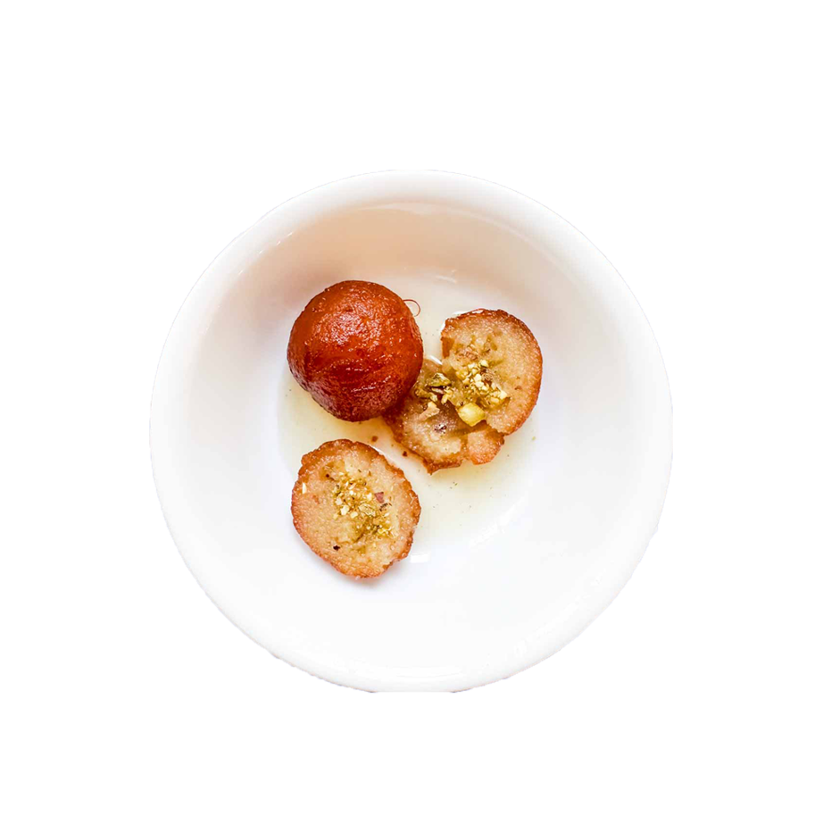

Calling all dessert lovers! Gulab jamun are melt-in-your-mouth fried dough balls soaked in fragrant rose-flavored syrup. I personally love to enjoy them alongside a scoop of cold kheer or vanilla ice cream for a delightful textural contrast.

üìù Ingredients
For the Dough
1 cup milk powder
1/4 cup all-purpose flour (maida)
1/4 teaspoon baking soda
2 tablespoons ghee (clarified butter)
2-3 tablespoons milk (as needed for kneading)
For the Sugar Syrup
2 cups sugar
1 1/2 cups water
1/4 teaspoon cardamom powder
1 teaspoon rose water (optional)
A few saffron strands (optional)
üìù Recipe
In a saucepan, combine sugar and water over medium heat.
Stir until the sugar dissolves completely.
Add ginger-garlic paste and stir
Add cardamom powder and bring to a boil.
Simmer for 5-7 minutes until the syrup slightly thickens.
Stir in rose water and saffron strands (if using), then remove from heat. Keep warm.
In a mixing bowl, combine milk powder, all-purpose flour, and baking soda.
Add ghee and mix well using your fingers until the mixture resembles breadcrumbs.
Gradually add milk, a little at a time, and knead to form a soft and smooth dough. The dough should be slightly sticky but manageable.
Divide the dough into equal-sized portions and roll each portion into smooth balls without any cracks. Make sure they are smooth to prevent them from breaking during frying.
Gently slide the prepared dough balls into the hot ghee or oil, a few at a time, ensuring not to overcrowd the pan.
Fry them on low to medium heat, stirring gently and continuously, until they turn golden brown and evenly colored. This process helps them cook evenly from the inside.
Once fried, remove the Gulab Jamun using a slotted spoon and drain excess oil by placing them on a paper towel for a few seconds.
Immediately transfer them to the warm sugar syrup.
Allow them to soak in the syrup for at least 1-2 hours so they absorb the flavors and become soft and juicy.
Gulab Jamun can be served warm or at room temperature. Garnish with chopped nuts like pistachios or almonds if desired.